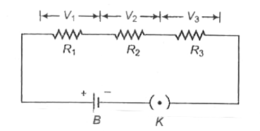
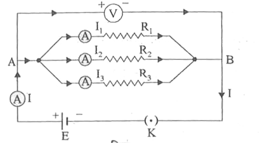

प्रश्न - विद्युत धारा से क्या तात्पर्य है? इसका मात्रक लिखिए। (म.प्र. 2021)
उत्तर -
किसी चालक के अनुप्रस्थ काट में से एकांक समय में प्रवाहित आवेश को विद्युत धारा कहते हैं। इसे I से व्यक्त करते हैं।
यदि चालक में t सेकण्ड में Q आवेश प्रवाहित होता है, तो विद्युत धारा —
\[
I=\frac{Q}{t}
\]
विद्युत धारा का S.I. मात्रक ऐम्पियर (Ampere) है।
प्रश्न - ऐम्पियर किसे कहते हैं?
उत्तर -
ऐम्पियर विद्युत धारा का S.I. मात्रक है।
यदि किसी चालक के अनुप्रस्थ काट से 1 सेकण्ड में 1 कुलाम (Coulomb) आवेश प्रवाहित होता है, तो उस चालक में प्रवाहित धारा का मान 1 ऐम्पियर होता है।
\[
1\ Ampere=\frac{1\ Coulomb}{1\ Second}
\]
प्रश्न - धारा घनत्व किसे कहते हैं? इसका मात्रक लिखिए। (म.प्र. 2024)
उत्तर -
किसी चालक के प्रति एकांक अनुप्रस्थ परिच्छेद से बहने वाली विद्युत धारा को उस बिन्दु पर धारा घनत्व कहते हैं। इसे J से व्यक्त करते हैं।
यदि चालक में प्रवाहित धारा I तथा चालक के परिच्छेद का क्षेत्रफल A हो, तो
\[
J=\frac{I}{A}
\]
धारा घनत्व का S.I. मात्रक —
\[
A/m^2
\]
धारा घनत्व एक सदिश राशि (Vector Quantity) है।
प्रश्न - अनुगमन वेग (अपवाह वेग) से आप क्या समझते हैं? (2026)
उत्तर -
किसी चालक के सिरों पर विभवान्तर आरोपित करने पर उसके अंदर मुक्त इलेक्ट्रॉन चालक के ऋणात्मक सिरे से धनात्मक सिरे की ओर गति करने लगते हैं।
मुक्त इलेक्ट्रॉनों के इस औसत वेग को अनुगमन वेग (Drift Velocity) अथवा अपवाह वेग कहते हैं।
इसे Vd से व्यक्त करते हैं।
प्रश्न: अनुगमन वेग, धारा तथा धारा घनत्व में संबंध स्थापित कीजिए।
उत्तर:
माना किसी चालक में मुक्त इलेक्ट्रॉनों की संख्या प्रति इकाई आयतन \(n\) है,
प्रत्येक इलेक्ट्रॉन का आवेश \(e\) तथा अनुगमन वेग \(v_d\) है।
चालक का अनुप्रस्थ काट क्षेत्रफल \(A\) है।
समय \(dt\) में इलेक्ट्रॉन द्वारा तय की गई दूरी:
\[
dx=v_d\,dt
\]
समय \(dt\) में चालक का आयतन :
\[
dV=A\,dx
\]
\[
dV=A\,v_d\,dt
\]
इस समय \(dt\) में चालक से गुजरने वाले इलेक्ट्रॉनों की संख्या:
\[
dN=n\,dV
\]
\[
dN=nA\,v_d\,dt
\]
अतः \(dt\) समय में प्रवाहित आवेश:
\[
dq=dN\times e
\]
\[
dq=nA\,v_d\,dt \times e
\]
अतः विद्युत धारा:
\[
I=\frac{dq}{dt}
\]
\[
\boxed{I=neAv_d}
\]
अब धारा घनत्व \(J\) का मान:
\[
J=\frac{I}{A}
\]
\[
\boxed{J=nev_d}
\]
अतः सिद्ध हुआ कि धारा \(I\), अनुगमन वेग \(v_d\) के समानुपाती होती है तथा
धारा घनत्व \(J\), अनुगमन वेग और आवेश वाहकों की संख्या घनत्व के गुणनफल के बराबर होता है।
प्रश्न - ओह्म का नियम लिखिए।
उत्तर -
ओम के अनुसार स्थिर ताप पर किसी चालक के सिरों के बीच उत्पन्न विभवान्तर (V), उसमें प्रवाहित धारा (I) के समानुपाती होता है।
अर्थात्,
\[
V \propto I
\]
\[
V = RI
\]
जहाँ R समानुपाती नियतांक है, जिसे चालक का प्रतिरोध कहते हैं।
इसी संबंध को ओह्म का नियम कहते हैं।
प्रश्न ओम के नियम की सीमाएँ लिखिए।
ओम के नियम की शर्तें (सीमाएँ)
यह नियम केवल धात्विक चालकों के लिए ही सत्य है।
चालक का तापमान, लंबाई तथा अन्य भौतिक अवस्थाएँ स्थिर रहनी चाहिए।
यह नियम डायोड, ट्रांजिस्टर, थर्मिस्टर, इलेक्ट्रोलाइट तथा गैसीय चालकों पर लागू नहीं होता।
बहुत अधिक ताप या उच्च विभवान्तर पर यह नियम सत्य नहीं रहता।
Q. धातुओं के मुक्त इलेक्ट्रॉन मॉडल के आधार पर ओम के नियम की स्थापना कीजिए।
उत्तर:
माना कि धातु के तार में मुक्त इलेक्ट्रॉन का आवेश \(e\), द्रव्यमान \(m\)
तथा आरोपित विद्युत क्षेत्र \(E\) है। इलेक्ट्रॉन पर लगने वाला बल
$$
F=eE
$$
अतः इलेक्ट्रॉन का त्वरण
$$
a=\frac{F}{m}
$$
$$
a=\frac{eE}{m}
$$
यदि दो क्रमिक टक्करों के बीच का औसत समय \(t\) हो, तो अपवाह वेग
$$
v_d=a\times t
$$
$$
v_d=\frac{eE}{m}\times t
$$
यदि चालक की लंबाई \(l\), अनुप्रस्थ काट का क्षेत्रफल \(A\) तथा
मुक्त इलेक्ट्रॉनों की संख्या प्रति इकाई आयतन \(n\) हो, तो धारा
ओम के नियम के अनुसार नियत ताप पर किसी चालक में प्रवाहित धारा
(I) उसके सिरों के बीच विभवान्तर (V) के समानुपाती होती है।
\[
V \propto I
\]
यदि चालक के विभवान्तर तथा धारा के मध्य ग्राफ खींचा जाए तो मूल बिन्दु से
गुजरने वाली एक सरल रेखा प्राप्त होती है।
I
│
│
│ /
│ /
│ /
│ /
│/
└──────────── V
प्रश्न - चालक का प्रतिरोध किसे कहते हैं?
चालक द्वारा विद्युत धारा के प्रवाह में किया गया विरोध
प्रतिरोध कहलाता है।
इसे R से प्रदर्शित करते हैं।
इसका SI मात्रक ओम (Ω) है।
प्रश्न - ओह्मीय तथा अनओह्मीय प्रतिरोध क्या हैं? (2026)
ओह्मीय प्रतिरोध :
वे प्रतिरोध जो ओम के नियम का पालन करते हैं,
ओह्मीय प्रतिरोध कहलाते हैं।
इनमें V तथा I का अनुपात स्थिर रहता है।
इनका V–I ग्राफ सीधी रेखा होता है।
उदाहरण :
ताँबे का तार
निक्रोम तार
धात्विक चालक
अनओह्मीय प्रतिरोध :
वे प्रतिरोध जो ओम के नियम का पालन नहीं करते,
अनओह्मीय प्रतिरोध कहलाते हैं।
इनमें V तथा I का अनुपात स्थिर नहीं रहता।
इनका V–I ग्राफ सीधी रेखा न होकर वक्र होता है।
उदाहरण :
डायोड
ट्रांजिस्टर
बल्ब का फिलामेंट (उच्च ताप पर)
प्रश्न - किसी चालक के प्रतिरोध को प्रभावित करने वाले कारक कौन-कौन से हैं?
किसी चालक का प्रतिरोध निम्नलिखित कारकों पर निर्भर करता है —
चालक की लंबाई :
चालक जितना अधिक लंबा होगा, उसका प्रतिरोध उतना ही अधिक होगा।
चालक का अनुप्रस्थ क्षेत्रफल (मोटाई) :
चालक जितना अधिक मोटा होगा, उसका प्रतिरोध उतना ही कम होगा।
चालक का पदार्थ :
विभिन्न पदार्थों का प्रतिरोध अलग-अलग होता है।
तापमान :
ताप बढ़ने पर सामान्यतः चालक का प्रतिरोध बढ़ जाता है।
प्रश्न - विशिष्ट प्रतिरोध किसे कहते हैं?
किसी पदार्थ के इकाई लंबाई तथा
इकाई अनुप्रस्थ क्षेत्रफल वाले चालक का प्रतिरोध
विशिष्ट प्रतिरोध कहलाता है।
इसे ρ (रो) से प्रदर्शित करते हैं।
इसका मान निम्न सूत्र से दिया जाता है —
\[
\rho=\frac{RA}{L}
\]
इसकी SI इकाई ओम-मीटर (Ω·m) होती है।
प्रश्न - चालक के प्रतिरोध एवं विशिष्ट प्रतिरोध में अंतर लिखिए।
चालक का प्रतिरोध
विशिष्ट प्रतिरोध
चालक द्वारा विद्युत धारा के प्रवाह का विरोध करने का गुण
प्रतिरोध कहलाता है।
किसी पदार्थ का वह गुण जिससे वह विद्युत धारा के प्रवाह का
विरोध करता है, विशिष्ट प्रतिरोध कहलाता है।
यह चालक की लंबाई, मोटाई, पदार्थ तथा ताप पर निर्भर करता है।
यह केवल पदार्थ तथा ताप पर निर्भर करता है।
यह किसी विशेष चालक का गुण होता है।
यह पदार्थ का मौलिक गुण होता है।
इसकी SI इकाई ओम (Ω) है।
इसकी SI इकाई ओम-मीटर (Ω·m) है।
प्रश्न - थर्मिस्टर (ताप प्रतिरोधक) क्या है? उपयोग सहित लिखिए। (म. प्र. 2017)
थर्मिस्टर एक ऐसी ताप-संवेदी (ऊष्मा-सुग्राही) युक्ति है, जिसका
विशिष्ट प्रतिरोध ताप के परिवर्तन के साथ बहुत तेजी से बदलता है।
थर्मिस्टर के उपयोग :
विद्युत परिपथों में वोल्टता के परिवर्तन की जाँच एवं नियंत्रण के लिए।
ट्रांसफॉर्मर, मोटर तथा जनित्र में सुरक्षा परिपथ के रूप में।
विभिन्न यंत्रों की ताप नियंत्रण इकाइयों में।
बहुत छोटे थर्मिस्टर उन स्थानों पर उपयोग किए जाते हैं जहाँ अन्य युक्तियाँ कार्य नहीं कर पातीं।
प्रश्न - चालकता किसे कहते हैं?
किसी विलयन द्वारा विद्युत धारा प्रवाहित करने की क्षमता को
चालकता (Conductance) कहते हैं। इसे G से प्रदर्शित करते हैं।
चालकता का मान प्रतिरोध के व्युत्क्रम के बराबर होता है।
\[
G=\frac{1}{R}
\]
इसकी SI इकाई ओम-1 (Ω-1) होती है।
प्रश्न - विशिष्ट चालकता किसे कहते हैं?
किसी चालक या विलयन के इकाई लम्बाई एवं इकाई अनुप्रस्थ क्षेत्रफल
वाले भाग की चालकता को विशिष्ट चालकता (Specific Conductance) कहते हैं।
इसे κ (कप्पा) से प्रदर्शित करते हैं।
विशिष्ट चालकता का मान विशिष्ट प्रतिरोध के व्युत्क्रम के बराबर होता है।
\[
\kappa=\frac{1}{\rho}
\]
जहाँ ρ विशिष्ट प्रतिरोध है।
इसकी SI इकाई
\[
\Omega^{-1}\,m^{-1}
\]
होती है।
प्रश्न - यदि किसी चालक तार की लम्बाई खींचकर दोगुनी कर दी जाए, तब उसका प्रतिरोध कितने गुना बढ़ जाएगा? गणना कीजिए। (म. प्र. 2013, 2017)
माना चालक तार का प्रारम्भिक प्रतिरोध R, लम्बाई L तथा अनुप्रस्थ काट का क्षेत्रफल A है।
प्रतिरोध का सूत्र,
\[
R=\rho \frac{L}{A}
\]
प्रश्नानुसार, तार की लंबाई दोगुनी करने पर, आयतन नियत रहने के कारण अनुप्रस्थ काट का क्षेत्रफल आधा हो जाता है। अतः नया प्रतिरोध,
\[
R_1=\rho \frac{L'}{A'}
\]
\[
R_1=\rho \frac{2L}{A/2}
\]
\[
R_1=4\rho \frac{L}{A}
\]
\[
R_1=4R
\]
अतः चालक तार का प्रतिरोध 4 गुना हो जाता है।
प्रश्न - किसी चालक तार की लंबाई को मूल लंबाई का आधा कर देने पर एवं अनुप्रस्थ काट का क्षेत्रफल दोगुना करने पर प्रतिरोध कितना हो जाएगा? (म. प्र. 2023)
माना चालक तार का प्रारम्भिक प्रतिरोध R, लम्बाई L तथा अनुप्रस्थ काट का क्षेत्रफल A है।
प्रतिरोध का सूत्र,
\[
R=\rho \frac{L}{A}
\]
प्रश्नानुसार, तार की लंबाई आधी तथा अनुप्रस्थ काट का क्षेत्रफल दोगुना करने पर नया प्रतिरोध,
\[
R_1=\rho \frac{L/2}{2A}
\]
\[
R_1=\rho \frac{L}{4A}
\]
\[
R_1=\frac{R}{4}
\]
अतः नया प्रतिरोध प्रारम्भिक प्रतिरोध का 1/4 (एक-चौथाई) होगा।
प्रश्न : प्रतिरोधों के श्रेणी क्रम संयोजन से क्या अभिप्राय है? श्रेणी क्रम में तुल्य प्रतिरोध के लिए सूत्र स्थापित कीजिए।
जब एक प्रतिरोध का दूसरा सिरा अगले प्रतिरोध के पहले सिरे से जुड़ा हो,
तब इस प्रकार के संयोजन को श्रेणी क्रम संयोजन (Series Combination) कहते हैं।
तुल्य प्रतिरोध (Equivalent Resistance) का व्यंजक :

माना R₁, R₂ तथा R₃ प्रतिरोध श्रेणी क्रम में जुड़े हैं तथा उनमें
I धारा प्रवाहित हो रही है।
ओम के नियम से,
\[
V_1 = IR_1
\]
\[
V_2 = IR_2
\]
\[
V_3 = IR_3
\]
यदि संयोजन का तुल्य प्रतिरोध R हो, तो कुल विभवान्तर
\[
V = IR
\]
किंतु हम जानते हैं कि,
\[
V = V_1 + V_2 + V_3
\]
\[
IR = IR_1 + IR_2 + IR_3
\]
\[
R = R_1 + R_2 + R_3
\]
अतः श्रेणी क्रम संयोजन में तुल्य प्रतिरोध का मान सभी प्रतिरोधों के योग के बराबर होता है।
प्रश्न : प्रतिरोधों के समान्तर क्रम संयोजन से क्या अभिप्राय है? समान्तर क्रम में तुल्य प्रतिरोध के लिए सूत्र स्थापित कीजिए।
जब सभी प्रतिरोधों के एक-एक सिरे एक बिन्दु पर तथा दूसरे सिरे दूसरे बिन्दु पर जुड़े हों,
तब इस प्रकार के संयोजन को समान्तर क्रम संयोजन (Parallel Combination) कहते हैं।
तुल्य प्रतिरोध (Equivalent Resistance) का व्यंजक :
माना तीन प्रतिरोध R₁, R₂ तथा R₃ समान्तर क्रम में जुड़े हैं तथा इनके सिरों पर
V विभवान्तर आरोपित है।
अतः समान्तर क्रम संयोजन में तुल्य प्रतिरोध का व्युत्क्रम,
सभी प्रतिरोधों के व्युत्क्रमों के योग के बराबर होता है।
प्रश्न : कार्बन प्रतिरोध का कलर कोड (वर्ण संकेत) से क्या अभिप्राय है?
विद्युत तथा इलेक्ट्रॉनिक परिपथों में कार्बन प्रतिरोधों का व्यापक उपयोग किया जाता है।
इन प्रतिरोधों का मान उन पर बनी रंगीन धारियों (Colour Bands) द्वारा प्रदर्शित किया जाता है।
प्रथम धारी → प्रथम सार्थक अंक दर्शाती है।
द्वितीय धारी → द्वितीय सार्थक अंक दर्शाती है।
तृतीय धारी → गुणक अर्थात् 10 की घात बताती है।
चतुर्थ धारी → सहनशीलता बताती है।
प्रतिरोध ज्ञात करने का सूत्र :
\[
R = AB \times 10^{C} \pm D\%
\]
रंग एवं उनके अंक :
रंग
अंक
काला
0
भूरा
1
लाल
2
नारंगी
3
पीला
4
हरा
5
नीला
6
बैंगनी
7
स्लेटी
8
सफेद
9
सहनशीलता (Tolerance) :
सुनहरी धारी = ±5%
चाँदी की धारी = ±10%
उदाहरण 1 :
हरा, काला, नारंगी, सुनहरी
\[
R = 50 \times 10^{3} \pm 5\%
\]
\[
R = 50000\ \Omega \pm 5\%
\]
उदाहरण 2 :
नारंगी, बैंगनी, काला, चाँदी
\[
R = 37 \times 10^{0} \pm 10\%
\]
\[
R = 37\ \Omega \pm 10\%
\]
प्रश्न : किरचॉफ के नियम (धारा वितरण संबंधी नियम) लिखिए।
किरचॉफ का प्रथम नियम (धारा नियम) :
किसी विद्युत परिपथ की प्रत्येक संधि (Junction) पर मिलने वाली
समस्त विद्युत धाराओं का बीजीय योग शून्य होता है।
\[
\sum I = 0
\]
संधि की ओर आने वाली धाराओं को धनात्मक तथा संधि से दूर जाने वाली
धाराओं को ऋणात्मक माना जाता है।
यदि किसी संधि पर \(I_1\) तथा \(I_2\) धाराएँ प्रवेश कर रही हों तथा
\(I_3\), \(I_4\) एवं \(I_5\) धाराएँ बाहर जा रही हों, तो
\[
I_1 + I_2 - I_3 - I_4 - I_5 = 0
\]
\[
I_1 + I_2 = I_3 + I_4 + I_5
\]
अतः किसी भी संधि पर आने वाली समस्त धाराओं का योग, उस संधि से बाहर
जाने वाली समस्त धाराओं के योग के बराबर होता है।
किरचॉफ का यह नियम आवेश संरक्षण के सिद्धान्त पर आधारित है।
किरचॉफ का द्वितीय नियम (वोल्टेज नियम) :
किसी भी बंद विद्युत परिपथ में विभिन्न खण्डों में बहने वाली धाराओं
तथा उनके संगत प्रतिरोधों के गुणनफल (IR) का बीजीय योग, उस परिपथ में
लगे सभी विद्युत वाहक बलों (EMF) के बीजीय योग के बराबर होता है।
\[
\sum IR = \sum E
\]
चित्रानुसार बंद जाल (1) के लिए,
\[
I_1R_1 - I_2R_2 = E_1 - E_2
\]
तथा बंद जाल (2) के लिए,
\[
I_2R_2 + (I_1 + I_2)R_3 = E_2
\]
यह नियम ऊर्जा संरक्षण के सिद्धान्त पर आधारित है तथा केवल
बंद परिपथों पर ही लागू होता है।
प्रश्न : व्हीटस्टोन सेतु का सिद्धान्त क्या है? इसे स्थापित कीजिए।
सिद्धान्त :
यदि चार प्रतिरोध किसी चतुर्भुज की चार भुजाओं में जुड़े हों तथा
चतुर्भुज के एक विकर्ण पर सेल और दूसरे विकर्ण पर धारामापी
(गैल्वेनोमीटर) लगाया गया हो, और चारों प्रतिरोध इस प्रकार चुने जाएँ
कि सेतु संतुलन की अवस्था में हो अर्थात् गैल्वेनोमीटर में कोई धारा
प्रवाहित न हो, तो दो संलग्न भुजाओं के प्रतिरोधों का अनुपात शेष दो
संलग्न भुजाओं के प्रतिरोधों के अनुपात के बराबर होता है।
यदि चार प्रतिरोध P, Q, R तथा S किसी चतुर्भुज की भुजाओं
AB, BC, AD तथा CD में जुड़े हों तथा विकर्ण AC पर
सेल और विकर्ण BD पर गैल्वेनोमीटर G लगाया गया हो तथा
सेतु संतुलन की अवस्था में हो, अर्थात् गैल्वेनोमीटर शून्य विक्षेप
दर्शा रहा हो, तो व्हीटस्टोन सेतु के सिद्धान्तानुसार
\[
\frac{P}{Q}=\frac{R}{S}
\]
सूत्र स्थापना :
मान लीजिए सेल E से परिपथ में I धारा प्रवाहित हो रही है।
बिन्दु A पर धारा दो भागों I₁ तथा I₂ में
विभाजित हो जाती है।
सेतु संतुलन की अवस्था में गैल्वेनोमीटर से कोई धारा प्रवाहित नहीं होती।
किरचॉफ के द्वितीय नियम से बंद जाल ABDA के लिए,
\[
I_1P-I_2R=0
\]
\[
I_1P=I_2R \qquad ...(1)
\]
इसी प्रकार बंद जाल BCDB के लिए,
\[
I_1Q-I_2S=0
\]
\[
I_1Q=I_2S \qquad ...(2)
\]
समीकरण (1) में समीकरण (2) का भाग देने पर,
\[
\frac{I_1P}{I_1Q}
=
\frac{I_2R}{I_2S}
\]
\[
\frac{P}{Q}
=
\frac{R}{S}
\]
यही व्हीटस्टोन सेतु का सिद्धान्त है।
प्रश्न : व्हीटस्टोन सेतु की सुग्राहिता कब सबसे अधिक होगी?
व्हीटस्टोन सेतु की सुग्राहिता (Sensitivity) सबसे अधिक तब होती है जब सेतु की चारों भुजाओं के प्रतिरोध लगभग समान हों तथा धारामापी की प्रतिरोधकता कम हो।
प्रश्न : व्हीटस्टोन सेतु के प्रयोग में सेल और धारामापी की स्थितियाँ आपस में बदल देने पर संतुलन की स्थिति पर क्या प्रभाव पड़ेगा?
व्हीटस्टोन सेतु में सेल और धारामापी की स्थितियाँ आपस में बदल देने पर भी संतुलन की स्थिति में कोई परिवर्तन नहीं होता है। सेतु का संतुलन बिन्दु पूर्ववत् बना रहता है।
प्रश्न : विद्युत सेल किसे कहते हैं?
वह युक्ति जो रासायनिक ऊर्जा को विद्युत ऊर्जा में परिवर्तित करती है, विद्युत सेल कहलाती है।
प्रश्न : विद्युत सेल कितने प्रकार के होते हैं?
विद्युत सेल मुख्यतः दो प्रकार के होते हैं —
प्राथमिक सेल (Primary Cell)
द्वितीयक सेल (Secondary Cell)
प्रश्न : प्राथमिक एवं द्वितीयक सेल में अन्तर लिखिए।
प्राथमिक सेल
द्वितीयक सेल
इनमें रासायनिक क्रिया अपरिवर्तनीय होती है।
इनमें रासायनिक क्रिया प्रतिवर्ती होती है।
इन्हें पुनः आवेशित (Recharge) नहीं किया जा सकता।
इन्हें पुनः आवेशित किया जा सकता है।
एक बार उपयोग के बाद निष्क्रिय हो जाते हैं।
बार-बार उपयोग किये जा सकते हैं।
उदाहरण - ड्राई सेल।
उदाहरण - लेड अम्ल संचायक, निकेल-कैडमियम सेल।
प्रश्न : किसी सेल के विद्युत वाहक बल तथा विभवान्तर से क्या अभिप्राय है?
विद्युत वाहक बल (EMF):
किसी सेल द्वारा एकांक आवेश को सम्पूर्ण परिपथ में प्रवाहित करने हेतु प्रदान की गई ऊर्जा को उस सेल का विद्युत वाहक बल कहते हैं।
यदि W कार्य करके Q आवेश प्रवाहित किया जाए, तो
\[
E=\frac{W}{Q}
\]
इसका SI मात्रक वोल्ट (V) है।
विभवान्तर (Potential Difference):
किसी चालक के दो बिन्दुओं के बीच एकांक आवेश को ले जाने में किए गए कार्य को उन बिन्दुओं के बीच का विभवान्तर कहते हैं।
यदि W कार्य करके Q आवेश एक बिन्दु से दूसरे बिन्दु तक ले जाया जाए, तो
\[
V=\frac{W}{Q}
\]
इसका SI मात्रक भी वोल्ट (V) है।
प्रश्न : किसी सेल के विद्युत वाहक बल तथा विभवान्तर में अंतर लिखिए। (म. प्र. 2012, 2018, 2023)
विद्युत वाहक बल (EMF)
विभवान्तर (Potential Difference)
किसी सेल द्वारा एकांक आवेश को सम्पूर्ण परिपथ में प्रवाहित करने हेतु दी गई ऊर्जा को विद्युत वाहक बल कहते हैं।
किसी चालक के दो बिंदुओं के बीच प्रति एकांक आवेश पर किया गया कार्य विभवान्तर कहलाता है।
इसे E से व्यक्त करते हैं।
इसे V से व्यक्त करते हैं।
परिपथ खुला होने पर इसका मान मापा जाता है।
परिपथ में धारा प्रवाहित होने पर इसका मान मापा जाता है।
यह सदैव विभवान्तर से अधिक या उसके बराबर होता है।
यह सामान्यतः विद्युत वाहक बल से कम होता है।
SI मात्रक वोल्ट (V) है।
SI मात्रक वोल्ट (V) है।
प्रश्न : किसी सेल के आन्तरिक प्रतिरोध से क्या समझते हैं?
किसी सेल के भीतर उपस्थित विद्युत अपघट्य (Electrolyte) तथा इलेक्ट्रोडों के कारण
धारा के प्रवाह में जो विरोध उत्पन्न होता है, उसे सेल का आन्तरिक प्रतिरोध
कहते हैं।
इसे r से व्यक्त करते हैं तथा इसका मात्रक ओम (Ω) होता है।
प्रश्न : आन्तरिक प्रतिरोध का मान किन-किन कारकों पर निर्भर करता है तथा कैसे? (म. प्र. 2009, 2019, 2022)
किसी सेल का आन्तरिक प्रतिरोध निम्नलिखित कारकों पर निर्भर करता है —
इलेक्ट्रोडों के बीच की दूरी :
इलेक्ट्रोडों के बीच की दूरी बढ़ने पर आन्तरिक प्रतिरोध बढ़ता है तथा दूरी घटने पर आन्तरिक प्रतिरोध घटता है।
इलेक्ट्रोडों के डूबे हुए क्षेत्रफल पर :
इलेक्ट्रोडों का डूबा हुआ क्षेत्रफल बढ़ने पर आन्तरिक प्रतिरोध घटता है तथा क्षेत्रफल कम होने पर बढ़ता है।
विद्युत अपघट्य की प्रकृति पर :
विभिन्न विद्युत अपघट्यों के लिए आन्तरिक प्रतिरोध का मान भिन्न-भिन्न होता है।
विद्युत अपघट्य की सांद्रता पर :
सांद्रता बढ़ने पर आन्तरिक प्रतिरोध घटता है तथा सांद्रता कम होने पर बढ़ता है।
ताप पर :
ताप बढ़ाने पर आन्तरिक प्रतिरोध घटता है क्योंकि आयनों की गतिशीलता बढ़ जाती है।
प्रश्न - किसी सेल के आंतरिक प्रतिरोध, टर्मिनल वोल्टता एवं विद्युत धारा में संबंध स्थापित कीजिए। (म.प्र. 2026)
उत्तर - माना किसी सेल का विद्युत वाहक बल E तथा आन्तरिक प्रतिरोध r है। बाह्य प्रतिरोध R में विभवान्तर V पर धारा I प्रवाहित होती है।
तथा टर्मिनल वोल्टता एवं विद्युत धारा के मध्य संबंध
\[
\boxed{V=E-Ir}
\]
होगा।
प्रश्न - मोटर गाड़ी को स्टार्ट करते समय उसकी हेडलाइट कुछ मंद क्यों हो जाती है?
उत्तर -
मोटर गाड़ी को स्टार्ट करते समय स्टार्टर मोटर बैटरी से बहुत अधिक धारा लेती है। इससे बैटरी के सिरों के बीच विभवान्तर कुछ कम हो जाता है।
विभवान्तर कम होने के कारण हेडलाइट को कम विद्युत शक्ति प्राप्त होती है, इसलिए उसकी चमक कुछ समय के लिए मंद हो जाती है।
प्रश्न - हीटर चलाने पर बल्ब मंद क्यों हो जाते हैं?
उत्तर -
हीटर एक उच्च शक्ति वाला उपकरण है, जो विद्युत परिपथ से अधिक धारा ग्रहण करता है।
अधिक धारा प्रवाहित होने के कारण तारों में विभवान्तर ह्रास (Voltage Drop) बढ़ जाता है, जिससे बल्बों को अपेक्षाकृत कम विभवान्तर प्राप्त होता है।
फलस्वरूप बल्बों की चमक कम हो जाती है और वे मंद दिखाई देते हैं।
प्रश्न - सर्दियों में कार का इंजन चालू करने में कठिनाई क्यों होती है?
उत्तर -
सर्दियों में निम्न ताप पर बैटरी के रासायनिक अभिक्रियाओं की दर कम हो जाती है, जिससे बैटरी का विद्युत वाहक बल तथा धारा देने की क्षमता घट जाती है।
साथ ही इंजन के तेल (Lubricating Oil) की श्यानता बढ़ जाती है, जिससे इंजन को घुमाने के लिए अधिक बल की आवश्यकता होती है।
इसी कारण सर्दियों में कार का इंजन चालू करने में कठिनाई होती है।
प्रश्न - सेलों का संयोजन क्या है?
उत्तर -
जब आवश्यक विद्युत वाहक बल (EMF) अथवा धारा प्राप्त करने के लिए दो या दो से अधिक सेलों को किसी निश्चित क्रम में जोड़ा जाता है, तो उसे सेलों का संयोजन कहते हैं।
सेलों का संयोजन मुख्यतः दो प्रकार का होता है —
समान्तर क्रम
श्रेणी क्रम
प्रश्न - सेलों को समान्तर क्रम में किस प्रकार संयोजित किया जाता है? बाह्य परिपथ में बहने वाली धारा के लिए व्यंजक ज्ञात कीजिए। यह संयोजन कब लाभप्रद होता है?
उत्तर -
जब कई सेलों के सभी धनात्मक ध्रुवों को एक साथ तथा सभी ऋणात्मक ध्रुवों को एक साथ जोड़ दिया जाता है, तब यह संयोजन समान्तर क्रम संयोजन कहलाता है।

मान लीजिए कि प्रत्येक सेल का विद्युत वाहक बल (emf) E तथा आन्तरिक प्रतिरोध r है और ऐसे n समान सेल समान्तर क्रम में जुड़े हैं। बाह्य प्रतिरोध R है।
समान्तर क्रम में संयोजन करने पर बैटरी का तुल्य विद्युत वाहक बल
अतः समान्तर क्रम संयोजन तब लाभप्रद होता है जब बाह्य प्रतिरोध कम हो तथा अधिक धारा प्राप्त करनी हो।
समान्तर संयोजन की उपयोगिता :
जब अधिक धारा की आवश्यकता हो।
जब बाह्य प्रतिरोध (R) का मान बहुत कम हो।
जब बैटरी का आन्तरिक प्रतिरोध कम करना हो।
इस संयोजन में सेलों की कार्य अवधि बढ़ जाती है।
प्रश्न - सेलों को श्रेणी क्रम में किस प्रकार संयोजित किया जाता है? बाह्य परिपथ में बहने वाली धारा के लिए व्यंजक ज्ञात कीजिए। यह संयोजन कब लाभप्रद होता है?
उत्तर -
जब एक सेल के धनात्मक ध्रुव को दूसरे सेल के ऋणात्मक ध्रुव से क्रमशः जोड़ दिया जाता है, तब इस प्रकार के संयोजन को श्रेणी क्रम संयोजन (Series Combination) कहते हैं।
मान लीजिए कि प्रत्येक सेल का विद्युत वाहक बल E तथा आन्तरिक प्रतिरोध r है और ऐसे n समान सेल श्रेणी क्रम में जुड़े हैं। बाह्य प्रतिरोध R है।
श्रेणी क्रम में संयोजन करने पर बैटरी का कुल विद्युत वाहक बल
\[
E_s= E + E + E + ......n cell
\]
\[
E_s=nE
\]
तथा कुल आन्तरिक प्रतिरोध
\[
r_s= r + r + r + ......n cell
\]
\[
r_s=nr
\]
कुल प्रतिरोध
\[
R_t= R + r_s
\]
\[
R_t= R + nr
\]
अतः ओह्म के नियम के अनुसार बाह्य परिपथ में प्रवाहित धारा
\[
I=\frac{E_s}{R_t}
\]
\[
I=\frac{nE}{R+nr}
\]
यही बाह्य परिपथ में बहने वाली धारा का व्यंजक है।
अतः श्रेणी क्रम संयोजन तब लाभप्रद होता है जब बाह्य प्रतिरोध का मान आन्तरिक प्रतिरोध की तुलना में अधिक हो तथा अधिक विभवान्तर प्राप्त करना हो।
श्रेणी क्रम संयोजन की उपयोगिता :
जब अधिक विभवान्तर (Voltage) प्राप्त करना हो।
जब बाह्य प्रतिरोध R, कुल आन्तरिक प्रतिरोध nr की अपेक्षा बहुत अधिक हो।
जब कम धारा तथा अधिक वोल्टता की आवश्यकता हो।
वस्तुनिष्ठ प्रश्न
प्रश्न 1. किसी चालक का प्रतिरोध निम्नलिखित में से किस पर निर्भर नहीं करता है?
(म. प्र. 2016 पूरक)
उत्तर: लगाए गए विभवान्तर पर
प्रश्न 2. विशिष्ट प्रतिरोध (प्रतिरोधकता) का मात्रक क्या है?
(म. प्र. 2009, 2011, 2013, 2016, 2016 पूरक, 2024 पूरक, प्रश्न बैंक)
उत्तर: ओह्म-मीटर (Ω m)
प्रश्न 3. किसी चालक का प्रतिरोध किन-किन कारकों पर निर्भर करता है?
(म. प्र. 2023 पूरक)
उत्तर: चालक की लंबाई, अनुप्रस्थ काट के क्षेत्रफल तथा ताप पर
प्रश्न 4. ताप बढ़ाने पर निम्नलिखित में से किसकी प्रतिरोधकता घटेगी?
(म. प्र. 2023 पूरक)
उत्तर: सिलिकॉन की
प्रश्न 5. किरचॉफ का धारा वितरण का प्रथम नियम किस संरक्षण नियम का पालन करता है?
(म. प्र. 2025)
उत्तर: आवेश संरक्षण के नियम का
प्रश्न 6. विभव प्रवणता का SI मात्रक क्या है?
(प्रश्न बैंक)
उत्तर: वोल्ट/मीटर (V/m)
प्रश्न 7. प्रतिरोधकता का विमीय सूत्र क्या है?
(म. प्र. 2022 पूरक, प्रश्न बैंक)
उत्तर: [ML3T−3A−2]
प्रश्न 8. एक तार का विशिष्ट प्रतिरोध या प्रतिरोधकता किस पर निर्भर करती है?
(म. प्र. 2015, 2019)
अथवा
किसी तार का विशिष्ट प्रतिरोध निम्नलिखित में से किस कारक पर निर्भर करता है?
(म. प्र. 2024)
उत्तर: तार के पदार्थ की प्रकृति पर
प्रश्न 9. अति-चालक पदार्थ की चालकता कितनी होती है?
(म. प्र. 2011, 2014, प्रश्न बैंक)
उत्तर: अनन्त
प्रश्न 10. धारा घनत्व का SI मात्रक क्या है?
(म. प्र. 2020, 2023)
उत्तर: ऐम्पियर/मीटर2 (A/m2)
प्रश्न 11. 'प्रामाणिक सेल' के रूप में उपयोग किया जाने वाला सेल कौन-सा है?
(म. प्र. 2013 पूरक)
उत्तर: डेनियल सेल
प्रश्न 12. ओमीय प्रतिरोध का उदाहरण कौन-सा है?
(म. प्र. 2012 पूरक, 2022)
उत्तर: ताँबे का तार
प्रश्न 13. विभवमापी के तार का पदार्थ कौन-सा होता है?
(म. प्र. 2017 पूरक)
उत्तर: मैंगनिन (Manganin)
प्रश्न 14. एक तार को खींचकर उसकी लंबाई दो गुनी करने पर उसका प्रतिरोध कितना हो जाएगा?
(म. प्र. 2019 पूरक, प्रश्न बैंक)
उत्तर: चार गुना
प्रश्न रिक्त स्थानों की पूर्ति कीजिए -
1. किसी विद्युत परिपथ में विद्युत धारा का मापन करने के लिए अमीटर को परिपथ में श्रेणीक्रम में जोड़ा जाता है।
2. एक आदर्श वोल्टमीटर का प्रतिरोध अनन्त होता है। (म. प्र. 2021, 22 पूरक)
3. नी-फे सेल का आविष्कार एडीसन ने किया था। (म. प्र. 2009)
4. विभवमापी को एक आदर्श वोल्टमीटर कहते हैं। (म. प्र. 2009, 18, प्रश्न बैंक)
5. विद्युत धारा अदिश राशि है। (प्रश्न बैंक)
6. धात्वीय चालकों में इलेक्ट्रॉन विद्युत धारा के वाहक हैं। (प्रश्न बैंक)
7. ताप बढ़ाने पर अर्धचालकों का प्रतिरोध घटता जाता है। (प्रश्न बैंक)
8. चालकता का मात्रक ओह्म−1 है। (म. प्र. 2010 पूरक)
9. विशिष्ट प्रतिरोध का विमीय सूत्र [ML3T−3A−2] है। (म. प्र. 2010)
10. जल वोल्टामीटर के ऐनोड पर ऑक्सीजन मुक्त होती है। (म. प्र. 2011 पूरक)
11. अर्धचालक का प्रतिरोध ताप गुणांक ऋणात्मक होता है। (म. प्र. 2011, 17, प्रश्न बैंक)
12. विभवमापी के तार के प्रति एकांक लंबाई में विभव का जो पतन होता है, उसे विभव प्रवणता कहते हैं। (म. प्र. 2012)
13. किरचॉफ का प्रथम नियम आवेश संरक्षण के सिद्धान्त पर आधारित है। (प्रश्न बैंक)
14. किरचॉफ का द्वितीय नियम ऊर्जा संरक्षण के सिद्धान्त पर आधारित है। (प्रश्न बैंक)
15. विद्युत धारा घनत्व सदिश राशि है। (प्रश्न बैंक)
16. किसी परिपथ में धारा का मान बदलने पर दूसरे परिपथ में प्रेरित वि. वा. बल का उत्पन्न होना अन्योन्य प्रेरण कहलाता है। (म. प्र. 2021)
17. धातु चालकों के लिए विभवान्तर और धारा के मध्य सीधा (सरल रेखा) ग्राफ प्राप्त होता है। (म. प्र. 2012 पूरक)
18. विद्युत अपघट्य की सान्द्रता बढ़ाने पर सेल का आन्तरिक प्रतिरोध बढ़ता है। (म. प्र. 2013 पूरक)
19. परिवर्तनशील विद्युत क्षेत्र विस्थापन धारा उत्पन्न करता है। (म. प्र. 2024)